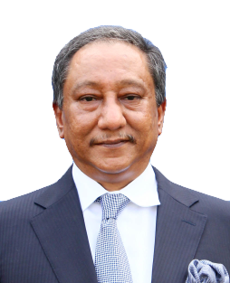

Information System For Cricket Clubs and players Of Bangladesh
Bangladesh Cricket Board (BCB), previously known as the Bangladesh Cricket Control Board, is the main governing body of cricket in Bangladesh.
BCB became a full member of the International Cricket Council on 26 June 2000. The Board has its headquarters in Dhaka, it is responsible
for the operation and development of cricket,
maintenance of venues, and selection for the national team. It is operated by the Government of Bangladesh.

NAZMUL HASSAN, MP
PRESIDENT
Nazmul Hasan Papon is the president of Bangladesh Cricket Board. Papon was born on May 31, 1961.
His father Zillur Rahman, was the president of Bangladesh . He completed his MBA from Institute of Business Administration, University of Dhaka.
He is the first elected president of the board with his predecessors being appointed by the Bangladesh Government. He was elected unanimously.
He is a member of parliament from Bangladesh Awami League.